Devoir
Servir la cité avant soi-même et répondre de ses actes devant les citoyens comme devant la loi.

République d’Erythros · Erythroyen(ne)
Présentation et organisation
Erythros fondait son identité sur la raison, le débat et l’équilibre entre les citoyens. Dans les assemblées, philosophes, stratèges et représentants confrontaient leurs idées avant que la République ne transforme la parole en décision.
Colonnes de marbre, places publiques, statues et fresques donnaient à ses cités une élégance monumentale. Cette beauté n’était pas un simple décor : elle exprimait la conviction qu’une société ordonnée devait rendre visibles ses lois, sa mémoire et ses devoirs.
Erythros était plus qu’une force militaire. C’était la vision d’un peuple persuadé que la grandeur d’un royaume naît autant de la sagesse collective que de la puissance de ses armes.
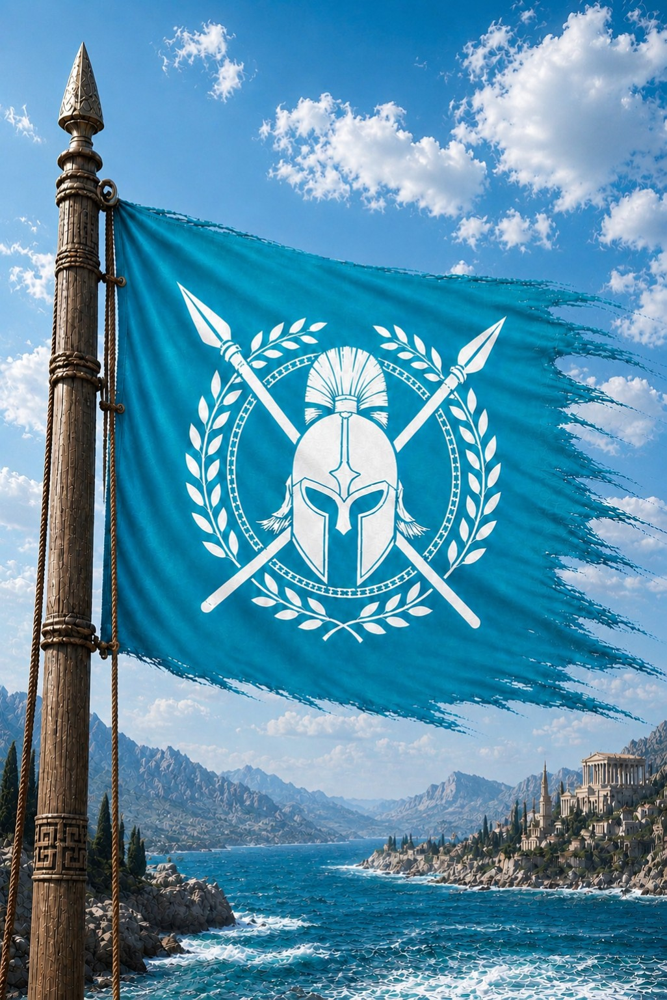
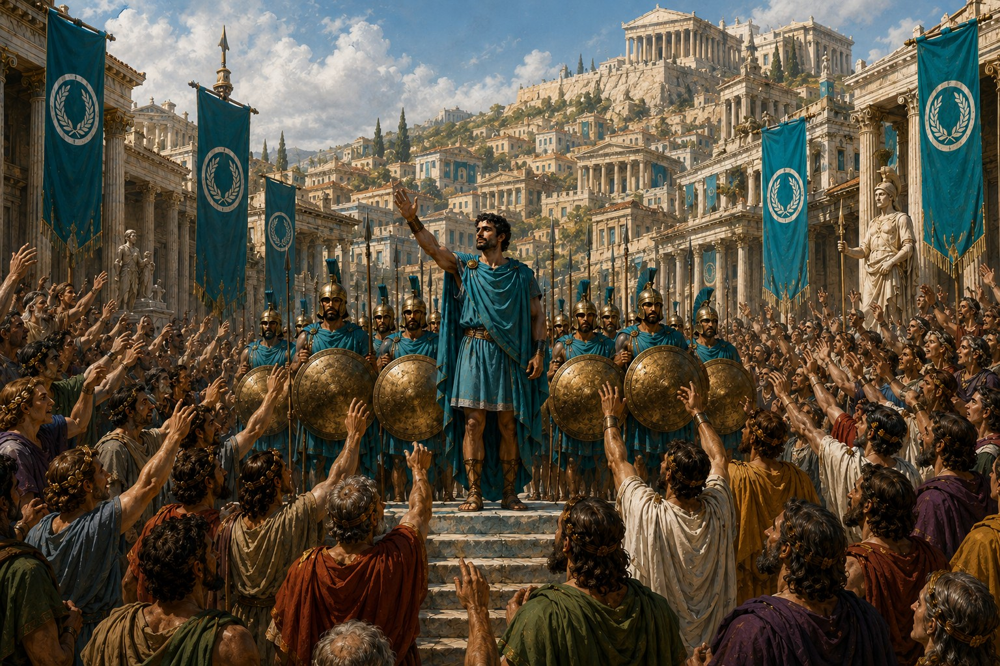
Une nation en expansion
Au sud s’étendaient des terres arides et brûlées par le soleil ; au centre, les plaines fertiles nourrissaient les grandes cités ; au nord, forêts, collines et reliefs formaient des provinces endurantes. Quelques îles proches des côtes complétaient ce vaste territoire continental.
Les populations des plaines devinrent agricultrices et marchandes, celles des montagnes cultivèrent discipline et résistance, tandis que les communautés des terres sèches perfectionnèrent l’art de l’adaptation. Toutes se reconnaissaient pourtant dans une même culture civique.
Servir la cité avant soi-même et répondre de ses actes devant les citoyens comme devant la loi.
Protéger l’équilibre de la République par des règles communes, des magistrats responsables et des jugements publics.
Faire de la rigueur civique et militaire le rempart qui unit des cités libres aux intérêts parfois contraires.
La parole sous le regard de la loi
Le Consul conduit l’État sans le posséder. Le Sénat préserve sa continuité, les assemblées portent la voix civique, les magistrats appliquent la loi et les forces armées restent soumises à l’autorité de la République.
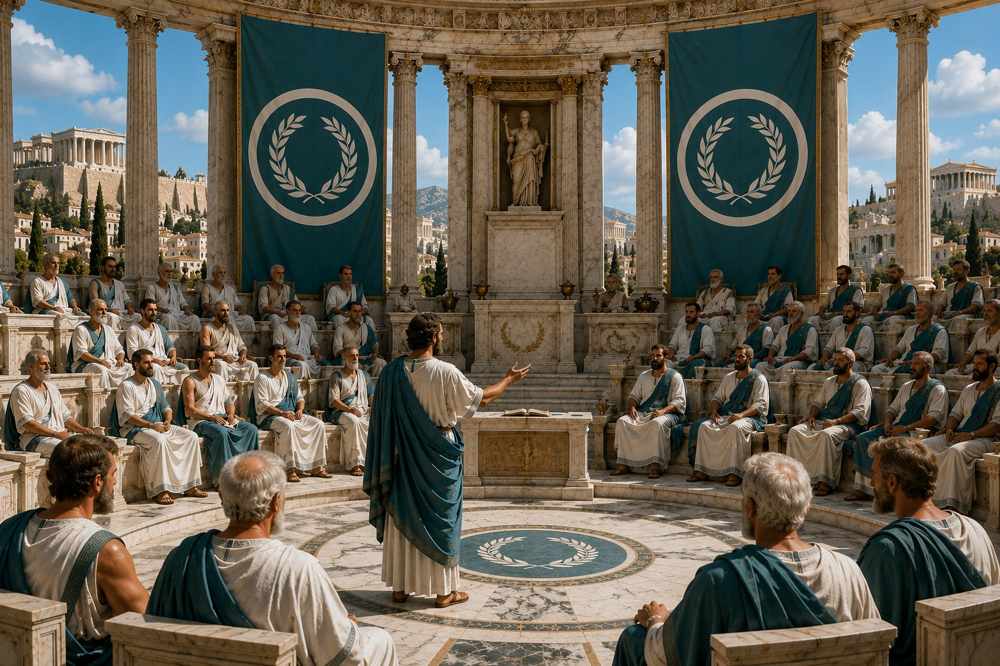
Élu pour un mandat d’un an, le Consul dirige l’administration, représente Erythros et dispose d’une autorité militaire encadrée. La brièveté du mandat protège la République contre la concentration durable du pouvoir.
Anciens magistrats, stratèges et administrateurs y examinent les lois, surveillent leur application et conseillent le Consul. Le Sénat assure la continuité de l’État au-delà des changements de mandat.
Les représentants et citoyens débattent des grandes orientations de la République. L’éloquence y est une arme politique, mais chaque décision doit servir l’intérêt commun plutôt qu’une cité particulière.
Les magistrats administrent les villes, interprètent les lois et rendent la justice. Leurs charges sont contrôlées afin de limiter les abus, la corruption et l’emprise des grandes familles.
L’armée terrestre repose sur les phalanges, la flotte protège le commerce et les îles, tandis que les milices locales peuvent être mobilisées rapidement pour défendre chaque cité.
Hiérarchie sociale
Chef élu de la République pour un an, responsable du gouvernement, de la diplomatie et de la défense.
Chef des armées et de la flotte, placé sous le contrôle des institutions républicaines.
Membre expérimenté du Sénat, gardien des institutions et conseiller du Consul.
Responsable des cités, de l’administration et de l’application des lois.
Membre d’une grande famille dont l’influence reste soumise aux devoirs de la République.
Artisan, marchand, agriculteur ou marin participant à la vie civique et à la défense commune.
Rangs militaires
Officier chargé d’une unité et de l’exécution des décisions du commandement.
Guerrier d’élite mobile, capable de soutenir la phalange ou de mener des actions rapides.
Citoyen-soldat formant le cœur discipliné de l’infanterie et combattant en phalange.
Mercenaire engagé pour son expérience, sa spécialité ou sa connaissance d’un territoire.
VolAmende, restitution ou travail forcé selon la gravité et les circonstances.
CorruptionPrison, perte de charge et exclusion durable de la vie publique.
MeurtreExil ou exécution après jugement par les magistrats compétents.
PrincipeLa loi s’applique aux citoyens comme aux dirigeants et doit préserver l’ordre sans servir une faction.
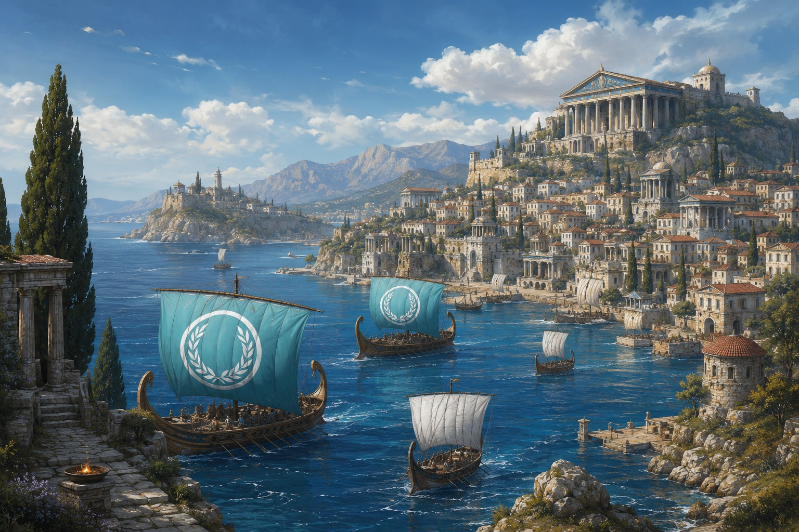
L’âge d’or avant la chute
Les cités s’agrandirent, les monuments publics se multiplièrent et le commerce relia les provinces aux mers lointaines. L’armée sécurisait le territoire tandis que les citoyens participaient à la vie publique. Cette prospérité semblait prouver la solidité des institutions — jusqu’à ce que le Cataclysme rende toute loi humaine impuissante.
Histoire et fondation
Quatre livres retracent l’union des cités, la maîtrise des mers, les crises de la République et les dernières heures de Myrinthia. Les récits répétés dans les archives ont été réunis en une chronologie unique.
Des cités rivales choisissent la coopération, bâtissent Myrinthia et transforment une alliance fragile en République durable.
Avant Erythros, les côtes de la mer d’Azur étaient partagées entre des cités de même langue et de même culture, mais continuellement opposées pour les terres, les ressources et les routes maritimes. Les pirates profitaient de leurs divisions pour piller ports et villages.
Le philosophe et stratège Lysandros Théodoris parcourut ces cités avec une conviction : aucune ne survivrait seule. Il refusa la conquête et proposa une union de peuples libres fondée sur la coopération.
À Pharos, après des mois de débats, les délégués scellèrent le Pacte Cyan. Un Sénat représenta les cités, une Assemblée ouvrit la vie politique aux citoyens et un Consul élu pour une durée limitée reçut la charge de gouverner. Lysandros devint le premier Consul d’Erythros.
« Une cité peut dresser des murs. Seule une République peut bâtir un avenir commun. »
Les premières années furent marquées par la méfiance des cités et des familles nobles, inquiètes de perdre leur autonomie. Le gouvernement associa négociation et fermeté pour faire respecter le Pacte sans détruire les libertés locales.
Routes, ports et écoles rapprochèrent les provinces. Une monnaie commune, la drachme dorée, facilita les échanges, tandis que des lois partagées et des fêtes nationales firent naître une identité erythroyenne.
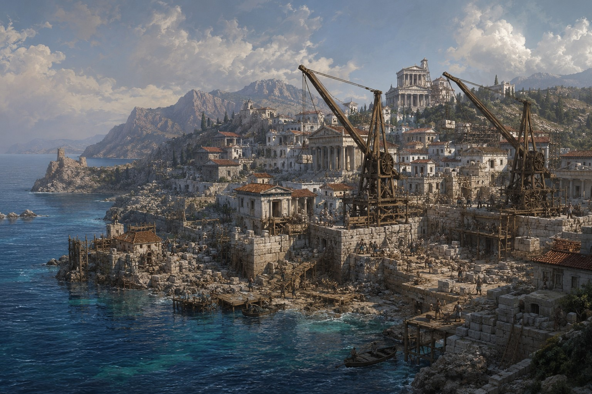
Pharos ne pouvait accueillir durablement les institutions. Le Sénat choisit une plaine côtière, au centre des grandes routes, pour fonder une capitale ordonnée, ouverte sur la mer et facile à défendre.
Des milliers d’ouvriers élevèrent avenues, places publiques, port marchand et palais civiques. Myrinthia devint bientôt le centre politique, économique et culturel de la République.
Pour protéger ses routes contre les pirates, Erythros négocia avec Thalassia et Argyron. Leur alliance garantit l’entraide militaire, la défense commune des convois et le développement des échanges.
Les flottes alliées patrouillèrent ensemble et réduisirent fortement les attaques. La mer d’Azur connut ainsi plusieurs années de stabilité et de prospérité.
Le royaume de Naxor menaçait les îles alliées et perturbait le commerce. Le Sénat déclara la guerre et confia à la flotte républicaine la défense de la mer d’Azur.
Après plusieurs années, Naxor fut vaincu dans le détroit de Sélénos. Le traité qui suivit sécurisa les routes et confirma la capacité d’Erythros à défendre ses alliés.
Le Sénat fit édifier à Myrinthia un centre destiné à préserver les connaissances et à soutenir la philosophie, l’histoire et les sciences.
Des milliers de manuscrits y furent rassemblés. Savants et voyageurs de toute la mer d’Azur firent de la bibliothèque l’un des plus grands symboles du rayonnement erythroyen.
Diplomatie, navigation et guerres lointaines font d’Erythros une puissance dont l’influence dépasse largement ses côtes.
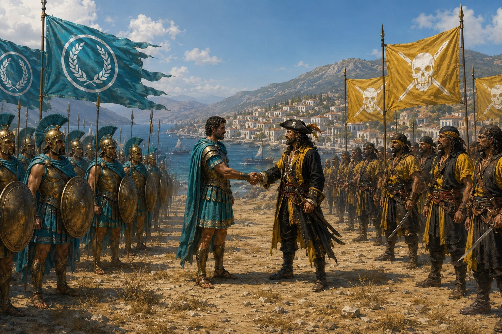
Après plusieurs incidents maritimes, Erythros et Nerethis envoyèrent leurs délégations sur l’île neutre d’Artalos. Sénateurs et capitaines discutèrent de commerce, de sécurité et de lutte contre les pirates indépendants.
Aucune alliance ne naquit de la rencontre, mais un accord de non-agression rouvrit plusieurs routes et rétablit une stabilité prudente entre les deux puissances.
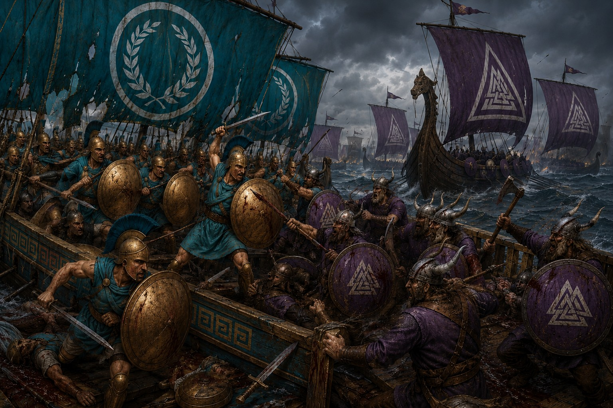
Poussée par les mauvaises récoltes, la Horde de Falkheim lança des raids contre les côtes d’Erythros avant de chercher à établir des bases permanentes. Le Sénat mobilisa la flotte et confia la guerre au Strategos Nikandros Valérios.
L’île de Thyréa fut reprise après de longs combats. Au Cap Clair, la connaissance des courants et une tempête soudaine permirent aux Erythroyens d’encercler une grande partie de la flotte ennemie.
Le Traité de Myrinthia mit fin à huit années de guerre : Falkheim cessa ses raids et reçut des droits commerciaux. Les anciens pillards se tournèrent progressivement vers les échanges.
Les taxes levées après la guerre du Nord provoquèrent un soulèvement paysan mené par l’ancien officier Dorian Argyros. Pendant deux ans, les rebelles résistèrent dans les montagnes.
Le Sénat préféra la négociation à une campagne interminable. Les taxes furent réduites et les provinces obtinrent davantage d’autonomie, préservant l’unité de la République.
Une ancienne faille libéra des milliers de créatures qui ravagèrent les provinces du sud. Soldats et mages de guerre affrontèrent l’invasion dans la plaine de Thalassar.
Un rituel referma la brèche au prix de milliers de vies. Cette Guerre du Néant devint un symbole de résistance et d’unité pour le peuple erythroyen.
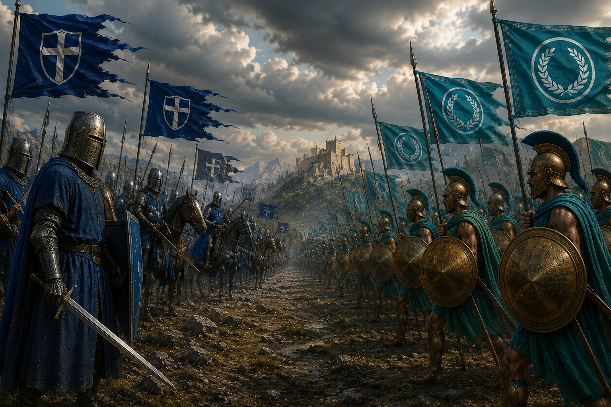
La République des cités libres et la monarchie sacrée de Vanloria s’opposèrent durant près d’un demi-siècle sans déclarer de guerre ouverte. Chacune soutenait ses alliés, finançait des factions et développait ses armées pour contenir l’autre.
La Crise des Îles d’Argentor plaça leurs flottes à quelques heures d’un affrontement total. Une médiation garantit finalement la neutralité de l’archipel.
Le Traité de Luméa reconnut leurs zones d’influence et stabilisa leurs relations. Leur compétition avait pourtant déjà transformé la diplomatie, l’espionnage et la technologie militaire du continent.
Lorsque Thalassia tenta de contrôler la mer orientale, le Strategos Nikandros attira sa flotte plus nombreuse dans l’étroit détroit d’Argyros.
Privés de manœuvre, les grands navires ennemis furent désorganisés puis vaincus. Le triomphe préserva l’indépendance maritime d’Erythros et devint une leçon nationale de stratégie.
Des différends commerciaux avec Asharun avaient provoqué des escarmouches le long des routes désertiques. Les deux États envoyèrent diplomates et marchands dans l’oasis neutre d’Al-Nahir.
Le traité garantit la protection des caravanes, ouvrit de nouvelles routes et créa des postes de surveillance communs. Il fut le premier grand accord durable entre les deux puissances.
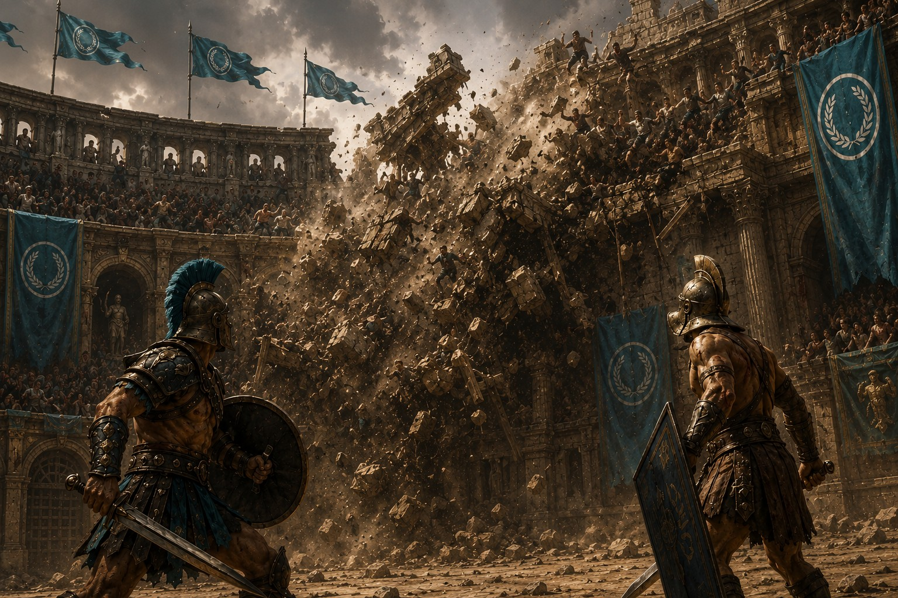
Lors de la finale du Grand Tournoi des Lames, une tribune s’effondra au milieu d’une arène comble. Les gladiateurs Théagros et Damaris interrompirent leur duel pour dégager les spectateurs pris sous les décombres.
Leur intervention évita un bilan plus lourd. Décorés de la Médaille du Phénix, ils inspirèrent de nouvelles normes de sécurité pour tous les grands rassemblements.
Un entrepôt d’huiles prit feu et les flammes gagnèrent quais et navires sous un vent violent. Habitants, marins et gardes luttèrent deux jours pour sauver le port et protéger les quartiers résidentiels.
L’enquête conclut que l’incendie avait probablement été provoqué pour atteindre le commerce et la stabilité de la République, sans que ses auteurs ne soient identifiés avec certitude.
D’anciens ennemis trouvèrent un intérêt commun dans la lutte contre les pirates. Erythros et Falkheim ouvrirent certains ports, organisèrent une assistance navale et protégèrent leurs convois.
Le commerce remplaça durablement les raids et donna aux deux peuples plusieurs décennies de prospérité partagée.
Un minotaure gigantesque ravageait les cultures et les troupeaux de Kharos. Le Sénat autorisa Ariston de Myrinthia à partir avec cinquante soldats expérimentés.
Après des semaines de traque, ils acculèrent la créature dans une grotte. Malgré de lourdes pertes, Ariston porta le coup décisif et fut célébré comme un héros national.
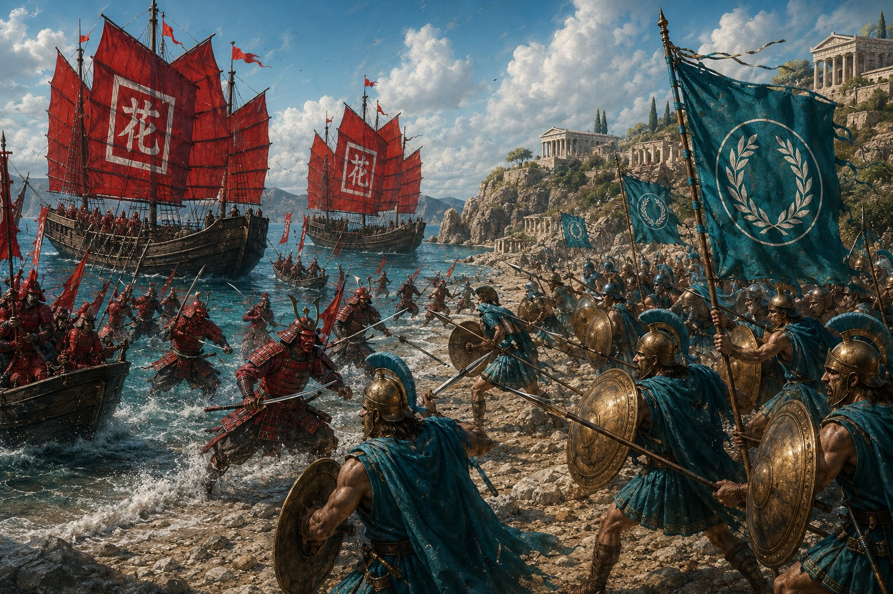
La rivalité pour les routes orientales, les saisies de cargaisons et l’attaque d’un convoi près de Natsukawa entraînèrent Erythros et Shintai dans l’une de leurs guerres les plus coûteuses.
Les combats furent d’abord maritimes, puis gagnèrent les îles alliées. À Kallistria, les troupes républicaines résistèrent trois jours ; dans les Brumes de Jade, plus de deux cents navires s’affrontèrent sans vainqueur clair.
Le Traité de l’Ambre, signé à Hoshin, conserva les territoires, plaça certaines routes sous protection commune et institua des ambassades permanentes. Les anciens ennemis devinrent avec le temps des partenaires majeurs.
Paix, trahisons, progrès et famines éprouvent les institutions jusqu’aux dernières décennies de l’ancien monde.
Le Consul Lagos et le roi Reman réunirent champions erythroyens et chevaliers vanloriens dans une cité frontalière. Joutes, duels d’honneur et épreuves d’adresse remplacèrent les tensions autour des droits de passage.
Un accord commercial et militaire fut signé à l’issue des festivités. Valecourt demeure le symbole d’une paix forgée par le respect mutuel.
Apparue chez des marins de Myrinthia, la maladie gagna rapidement les villes. Les marchés se vidèrent et les guérisseurs furent submergés.
Le Sénat imposa quarantaines, restrictions de voyage et fermeture temporaire des ports. La fièvre recula après de longs mois, laissant des cicatrices humaines et économiques profondes.
Un traité avec Nerethis devait protéger les navires et enrichir les deux puissances. En secret, les chefs pirates utilisèrent l’accord pour recueillir les itinéraires et les mouvements de la flotte erythroyenne.
Lorsque des convois furent attaqués grâce à ces renseignements, le Sénat déclara la guerre. La flotte républicaine reprit les routes, mais l’alliance brisée laissa une hostilité durable.
Un violent séisme détruisit des quartiers côtiers avant qu’un raz-de-marée n’emporte ports et habitations. Des milliers de citoyens périrent.
Les cités unirent aussitôt médecins, vivres et ouvriers. Cette solidarité accéléra la reconstruction et renforça le sentiment d’appartenance à une même République.
Un convoi diplomatique erythroyen fut intercepté dans des eaux revendiquées par Shintai. L’incident causa plusieurs morts et la mobilisation des deux flottes.
Des négociations évitèrent une nouvelle guerre, mais Kenzora resta l’un des moments les plus dangereux de leurs relations après le Traité de l’Ambre.
Des sénateurs et hauts responsables préparèrent une prise de pouvoir destinée à placer leurs alliés aux postes clés. Des lettres interceptées révélèrent le projet avant son exécution.
Les conspirateurs furent arrêtés et de nouvelles lois renforcèrent le contrôle des charges publiques et la lutte contre la corruption.
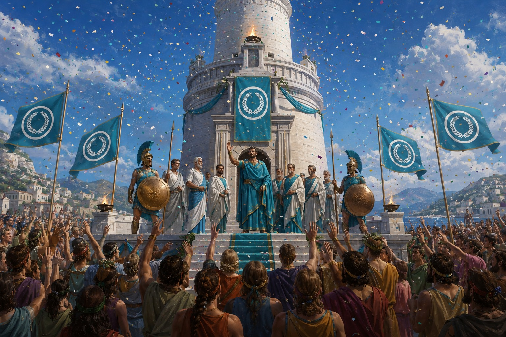
Sous le Consul Carlos, une tour de pierre blanche fut élevée à l’entrée du port pour guider les navires parmi tempêtes, récifs et brouillards.
Son immense brasier, entretenu nuit et jour, devint un symbole de sécurité, de savoir-faire et de puissance maritime pour toute la République.
Des explorateurs découvrirent un vaste réseau d’eau douce dans les collines d’Orélis. Le Sénat lança la construction d’aqueducs, de canaux et de réservoirs.
L’approvisionnement des villes s’améliora et de nouvelles terres agricoles furent ouvertes. Le projet demeure l’un des aménagements les plus bénéfiques d’Erythros.
Pour financer travaux publics et campagnes militaires, le gouvernement réduisit la part de métal précieux contenue dans la monnaie. Les marchands perdirent confiance et les prix s’envolèrent.
Faillites, chômage et pauvreté frappèrent les provinces. Des réformes monétaires strictes restaurèrent lentement la stabilité, sans effacer le souvenir de la crise.
Mauvaises récoltes, commerce affaibli et inflation épuisèrent les greniers. Des milliers de familles quittèrent les campagnes pour chercher de l’aide dans les grandes cités.
Le Sénat organisa des distributions et envoya des navires acheter du grain à l’étranger. Les récoltes finirent par revenir, mais trop tard pour de nombreuses régions isolées.
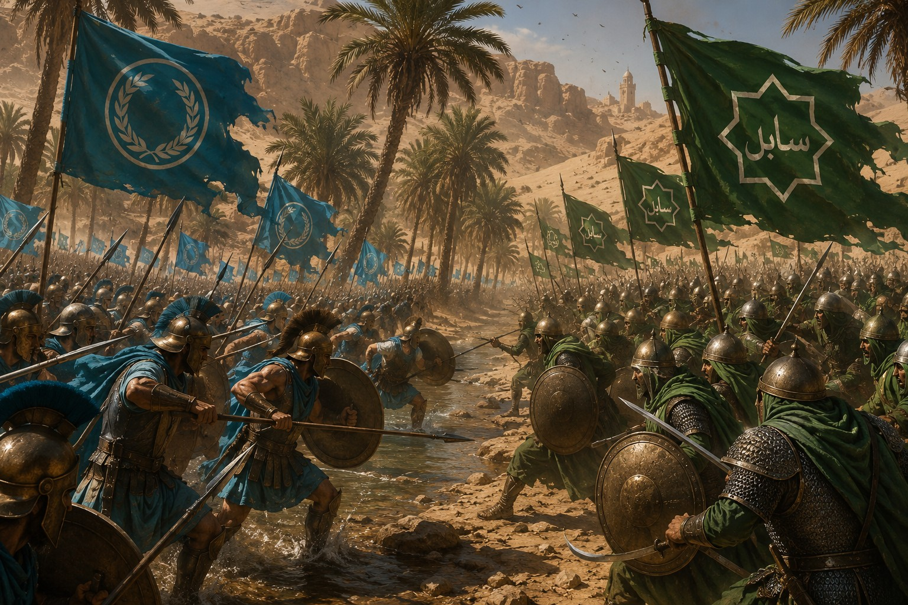
Après la famine, attaques de caravanes, accès aux puits et capture d’un convoi de grain menèrent Erythros à déclarer la guerre à Asharun. Les premières campagnes tournèrent à l’avantage des cavaliers du désert.
La République réorganisa son armée et visa les oasis plutôt que les villes. À la Bataille des Trois Oasis, elle sécurisa une région commerciale décisive au prix de lourdes pertes.
Le traité signé à Al-Nahir rétablit les anciennes frontières et la libre circulation des caravanes. Aucun camp ne triompha pleinement, mais les intérêts commerciaux furent préservés.
Des êtres aquatiques oubliés émergèrent près des côtes, attaquant villages de pêcheurs et navires marchands. La flotte, des soldats et des chasseurs furent déployés le long du littoral.
Après plusieurs mois d’affrontements, les créatures regagnèrent les profondeurs. Nul ne sut ce qui les avait réveillées.
Les avertissements ignorés deviennent une fin du monde. Myrinthia livre son dernier combat face aux colosses des profondeurs.
Pêcheurs et marins virent des silhouettes sous la mer, entendirent des chants nocturnes et signalèrent des navires disparus. Les oracles annoncèrent une catastrophe, mais le Sénat traita longtemps leurs visions comme des rumeurs.
Tempêtes, villages silencieux et patrouilles disparues se multiplièrent. Depuis le Phare de Lumière, les gardiens observèrent enfin d’immenses formes sombres se rapprocher chaque nuit.
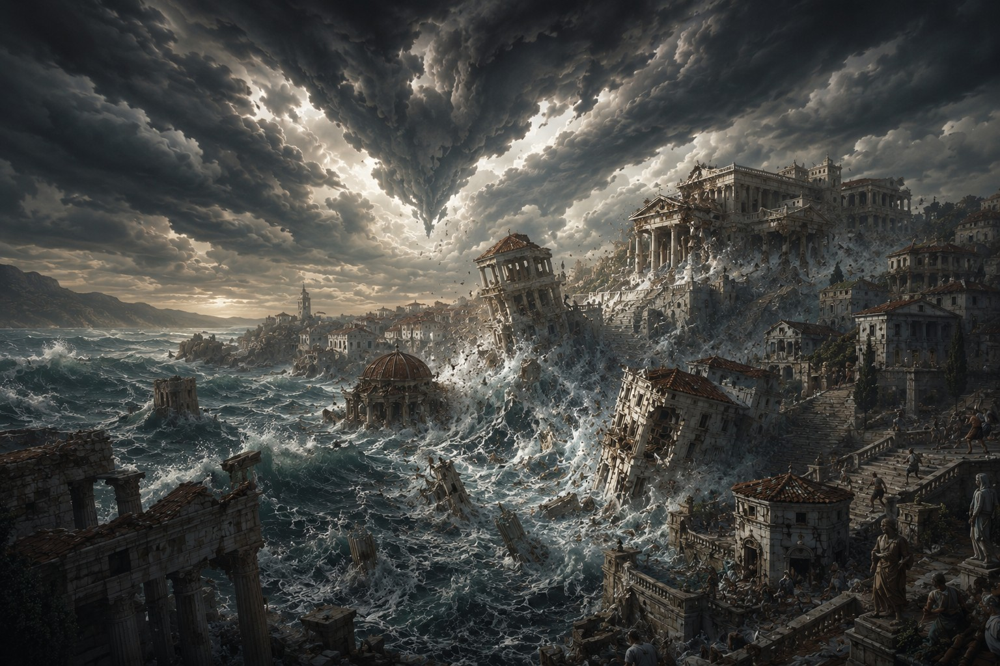
Des séismes ouvrirent la terre et renversèrent temples et maisons. Puis la mer se retira avant de revenir sous la forme de murs d’eau qui engloutirent ports, flottes et villes côtières.
Myrinthia survécut partiellement grâce à ses collines et ses murailles. Mais les failles libérèrent des créatures de pierre noire parcourues d’énergie violette, contre lesquelles les armes ordinaires se brisaient.
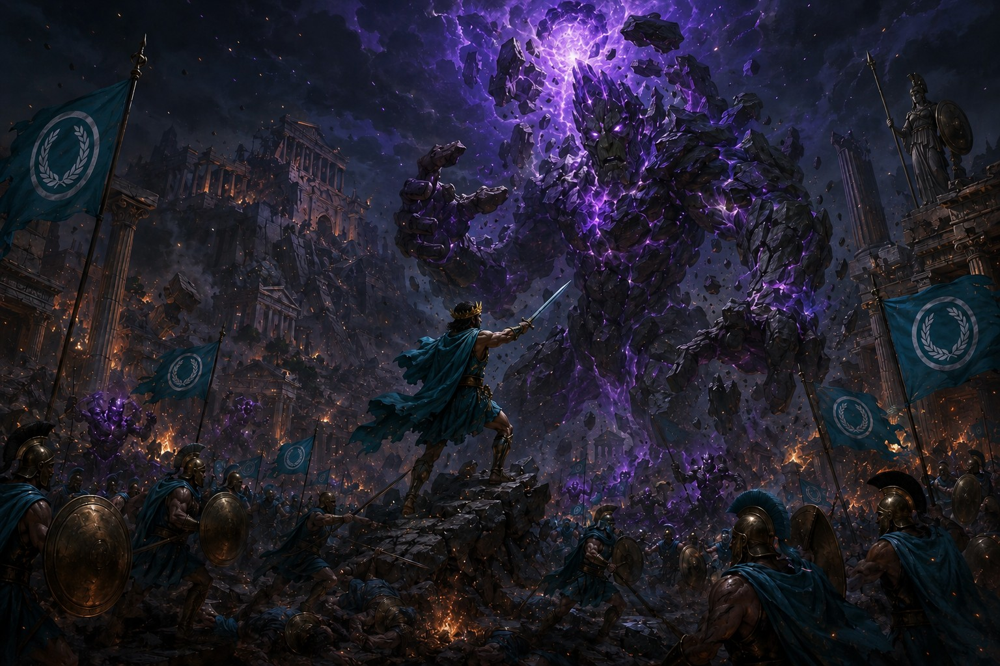
Hoplites, artisans, marchands, pêcheurs, érudits et réfugiés élevèrent des barricades et défendirent chaque carrefour. Pour chaque créature détruite, d’autres sortaient des crevasses.
Une fissure gigantesque s’ouvrit au cœur de la capitale. Un colosse de pierre noire et de cristal, animé de veines violettes, s’éleva au-dessus des ruines. Même les plus courageux comprirent que les monstres précédents n’étaient que ses précurseurs.
Le dernier Consul Deros s’avança seul, l’armure brisée et le bouclier fendu. Il frappa les failles lumineuses du géant tandis que chacun de ses pas faisait trembler les ruines.
Dans un ultime élan, Deros planta son épée au cœur de la créature. La lumière violette explosa ; la terre, le ciel et la mer commencèrent à se désagréger. Ni le Consul ni son adversaire ne survécurent.
« Que le dernier acte de la République soit encore un acte de courage. »
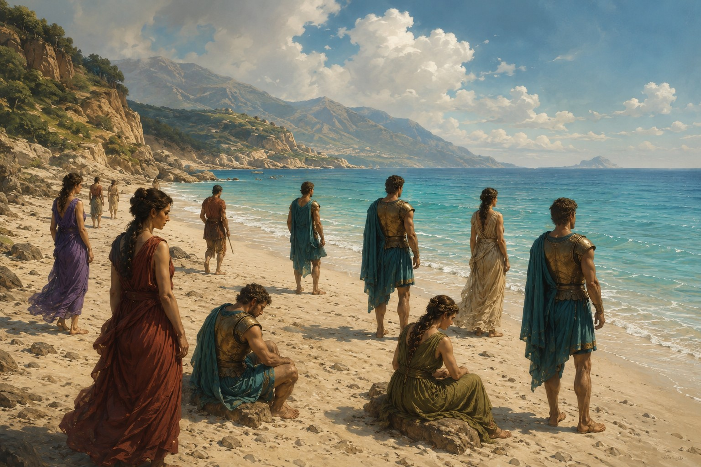
Après la disparition de l’ancien monde, certains Erythroyens rouvrirent les yeux sur des plages inconnues. Devant eux s’étendaient une mer paisible, des forêts et des montagnes absentes de toutes leurs cartes.
Leurs cités, leurs ports et leurs monuments avaient disparu, mais leurs valeurs demeuraient. Sur ces terres nouvelles, ils devraient reconstruire une République digne de la mémoire de ceux qui étaient tombés.
Le début d’un nouvel âge
Sur une plage inconnue, les survivants ont retrouvé une mer paisible et un horizon sans carte. Les temples de marbre ont disparu, mais le devoir, la justice et la discipline demeurent. La République ne renaîtra pas par ses monuments : elle renaîtra par ceux qui choisiront encore de servir le bien commun.